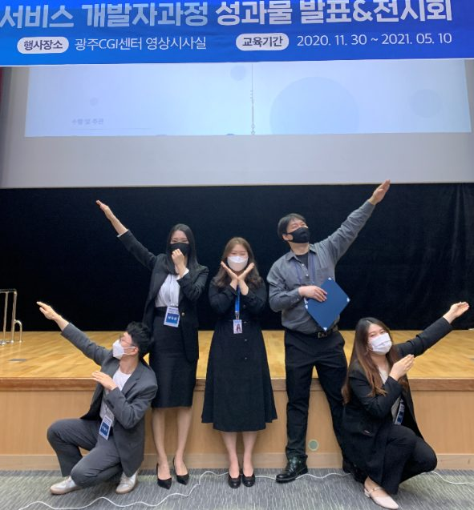

NCS 기반 인공지능 융합 개발자 과정 후기
작성자: 정철화
작성일: 2021-05-14 22:10:43
조회수: 455
원본 게시글 번호: 1083
비전공자이고 많은 힘든 점이 있었지만 선생님들 덕분에 차근차근 배운 좋은 시간이었던 것 같습니다. 프로젝트 팀을 하면서 팀원들 간의 좋은 추억도 많이 쌓을 수 있었고 간접적으로나마 프로그램 개발 진행을 할 수 있어 즐거웠습니다. 우리 인공지능반 학생들, 지영쌤, 성우쌤 그리고 수업해주신 모든 선생님들께 감사하다 말하고 싶습니다. 이 시간이 그리워질 것 같습니다.
